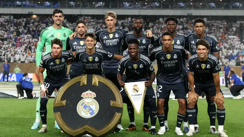
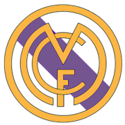
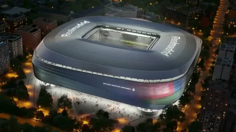

«Реа́л Мадри́д» (исп. Real Madrid Club de Fútbol) — испанский профессиональный футбольный клуб из города Мадрид.

Основание:
В 1896 году был создан клуб «Футбол Скай», ставший прародителем мадридского клуба. Но официальной датой основания считается 6 марта 1902 года, когда братья Падрос и Хулиан Паласиосы открывают клуб под названием Madrid Football Club. 29 июня 1920 года король Испании Альфонс XIII присвоил клубу титул Королевский, что по-испански звучит как Real. Отсюда современное название клуба — Real Madrid.
Логотипы:

Стадион:
Стадион был назван «Сантьяго Бернабеу» в честь президента «Реал Мадрида» 1943—1975 годов, который являлся инициатором постройки нового стадиона. Строительство длилось три года. Матчем-открытием стал товарищеский поединок с португальским клубом «Белененсиш», встреча состоялась 14 декабря 1947 года и завершилась победой хозяев со счётом 3-1.

Бернабеу, скончавшийся в 1978 году, вынашивал планы строительства нового стадиона к северу от Мадрида, но они так и не воплотились в жизнь. Зато к чемпионату мира 1982 году был реконструирован «Сантьяго Бернабеу». Теперь он был оборудован сидячими трибунами на 30 200 мест и галереями для стоячих мест, рассчитанными на 60 000 человек. В общей сложности 345 000 зрителей присутствовали на трёх матчах группового турнира и на потрясающем финале. Прошло десять лет: реконструкция продолжалась. Был завершён третий ярус трибун. Число сидячих мест возросло до 65 000 при общей вместимости 105 000 мест. После очередной реконструкции стадион стал ещё более комфортабельным, но вместимость понизилась до 74 871 зрителя.